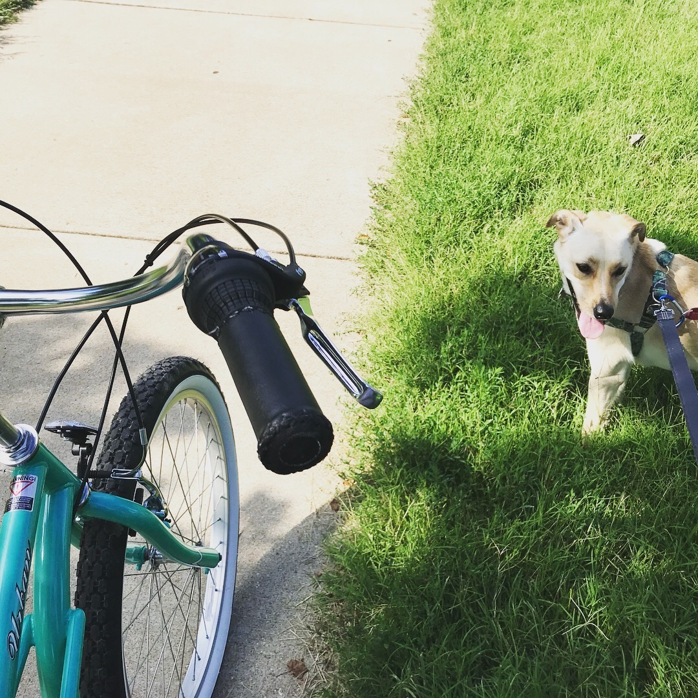
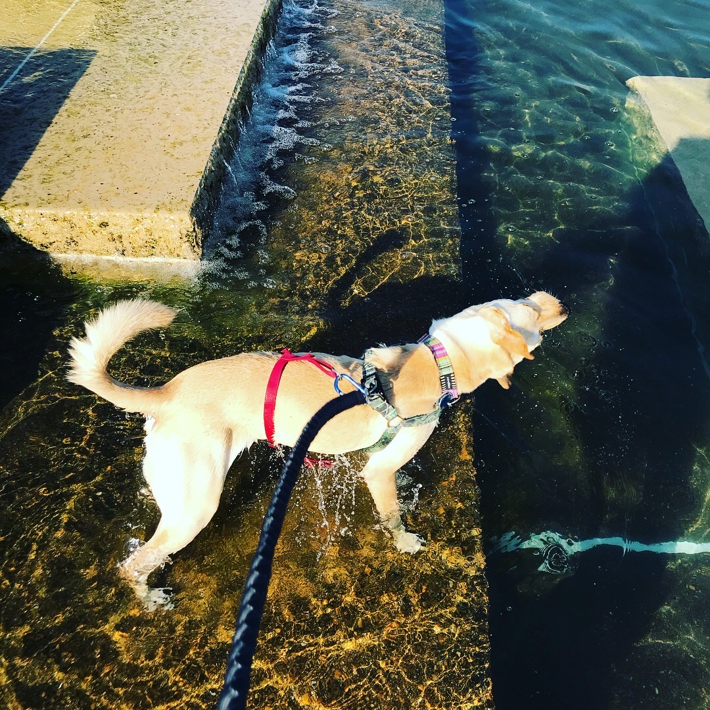
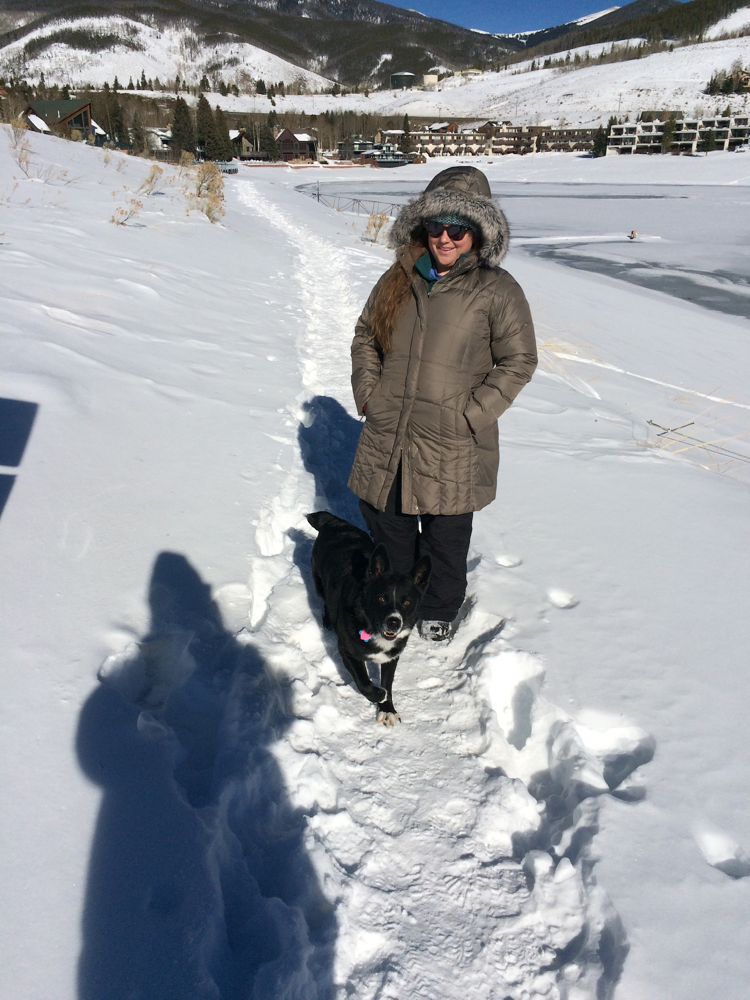
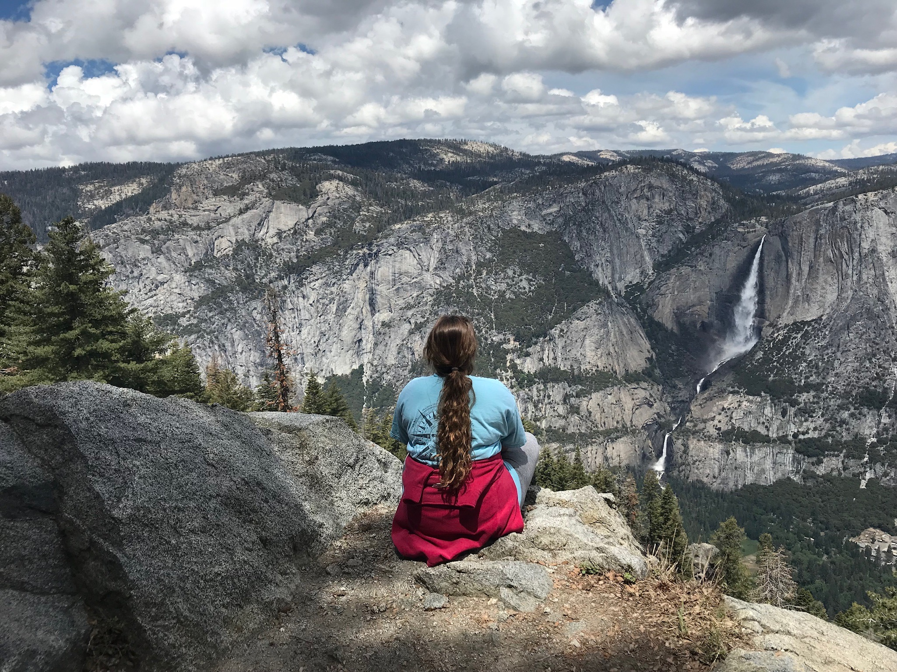
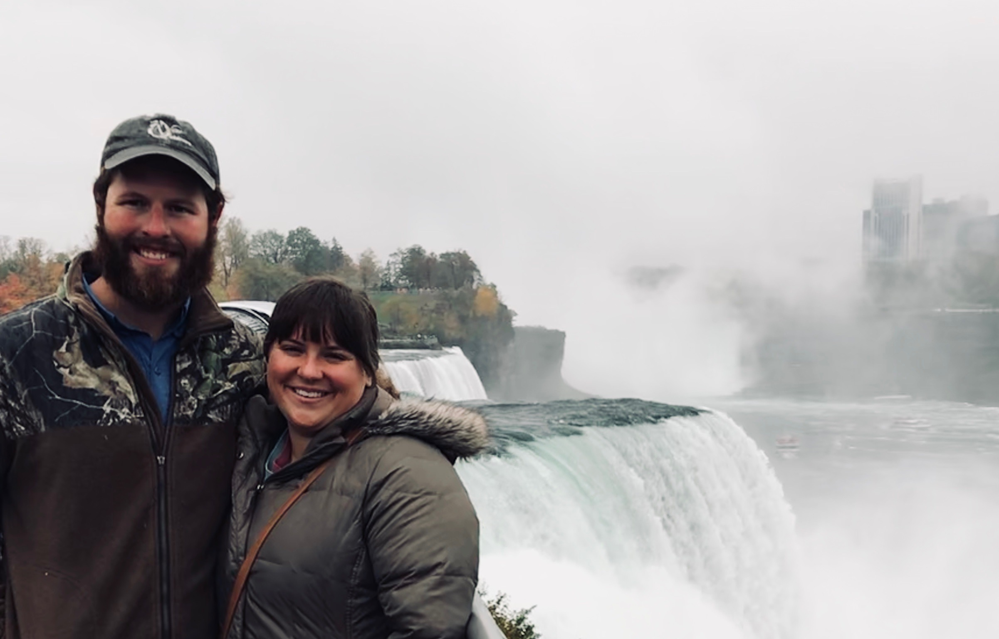
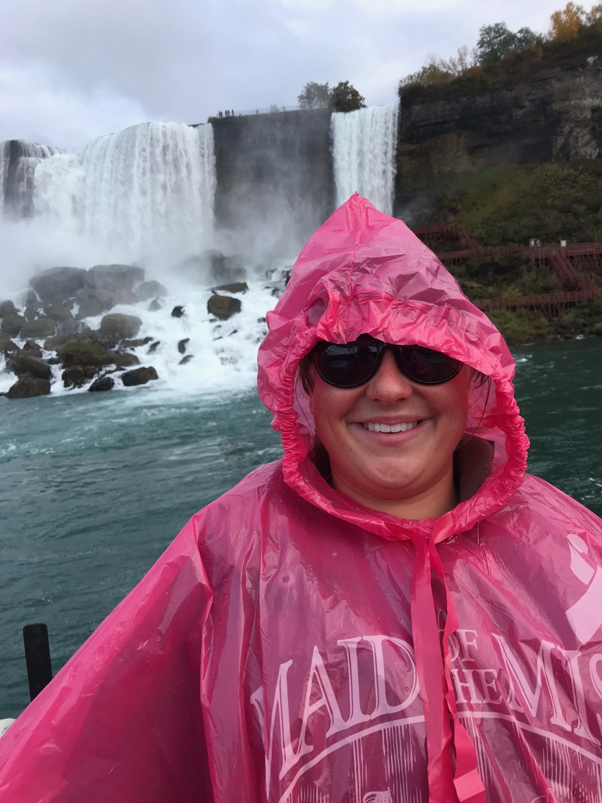
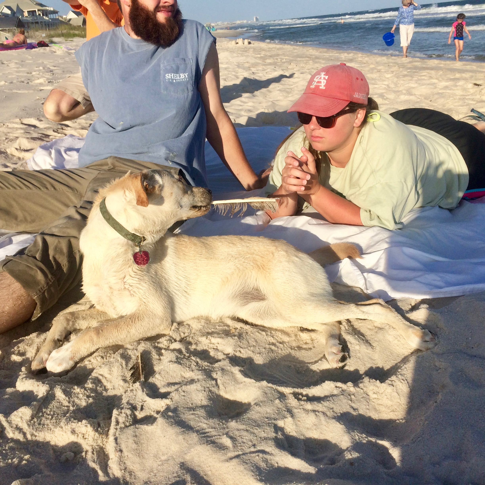
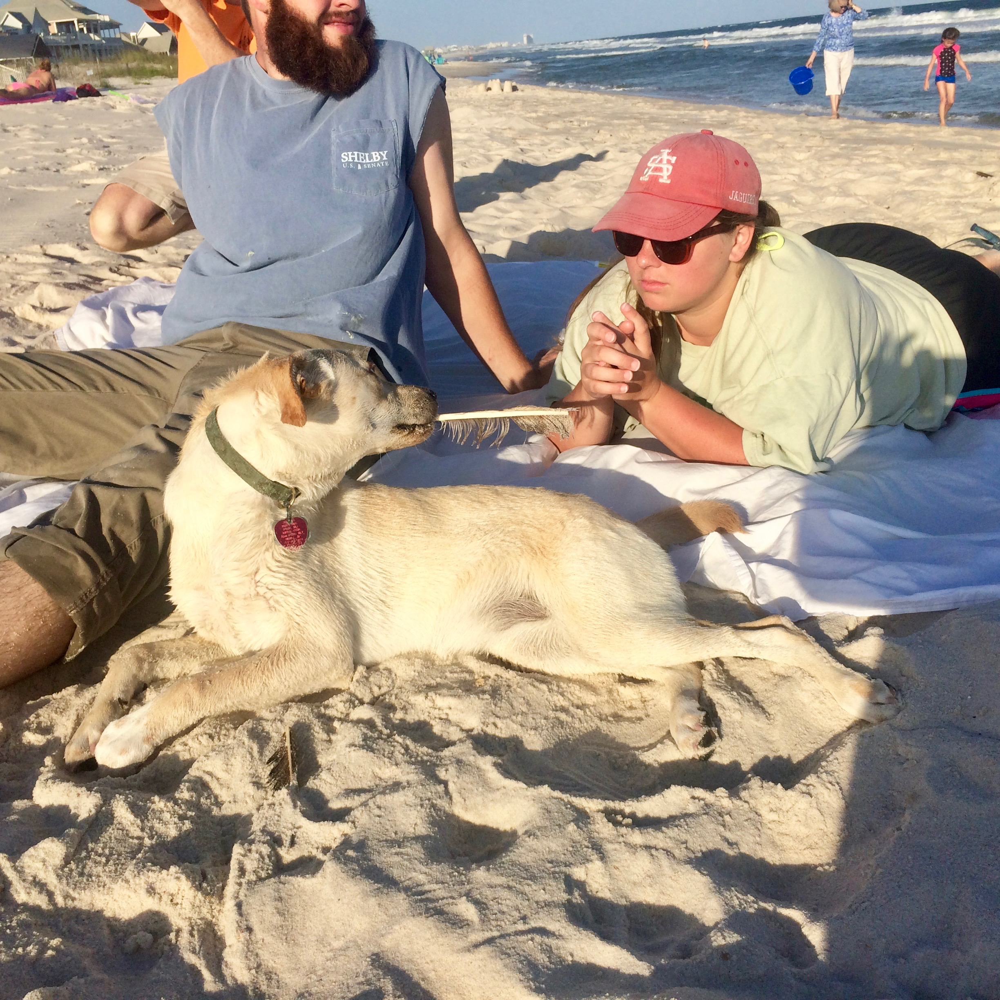

I love to snow ski. I have been skiing in several states across the US, beginning when I was 3 years old. Below are pictures of me and my sister Samantha, as well as me with my boyfriend, Tyler, whom I taught to ski a few years ago (now he is better than I am!).
Katherine Sweet's Favorite Hobbies
Snow Skiing
Detailed Description of Skiing!
Pictures of Skiing


Biking and Running
Detailed Description of Biking and Running!
I love to bike and run, especially with my dog Moon. Yes, you heard that right - my dog and I run together and bike together! I use a special harness and leash so she can run next to my bike. I began running about a year ago, so now we rotate between biking and running. We do between 2 and 5 miles every morning, and we walk in the evenings. Moon is almost 4 years old, and she is a sweetheart. Tyler and I enjoy playing with her every chance we get, and she loves the outdoors. Below are a few pictures of Moon and me at Forest Park, where her favorite trails are.
Pictures of Biking and Running
 Travel
Detailed Description of Travel!
My final, and most expensive, hobby is traveling. Tyler and I love to travel around the country and see all kinds of places. We love being outdoors; trail-hiking, biking, fishing, and swimming are some of our favorite things to do. But we love to do them in unique places! I have also traveled internationally; below are a few great pictures from the month I spent in Thailand.
Pictures of Travel
    
